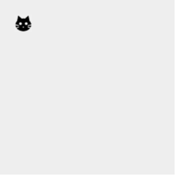
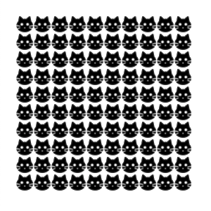
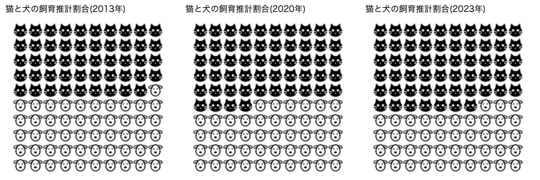

画像の描画
100個の円を色分けしてデータを表しました。ここでは、色の代わりに、画像を使ってデータを区別します。P5.jsは gif、jpg、png形式の画像データを表示できます。画像ファイルをプログラムに読み込むとp5.Imageクラスのオブジェクトが作られ、画像のピクセルデータが保存されます。
クラスはプログラム部品の設計図、オブジェクトはその設計図から作られた個々の部品というイメージで捉えておいてください。
サンプルや練習問題で使う画像ファイルは、画像ページからコピーできます。
画像ファイルを表示する
リストT1-1-1では、ひとつの円を描きましたが、円の代わりに画像を表示したのがリストT1-3-1です。画像を読み込み、表示するまでの手順を説明します。(1) スケッチフォルダ(jsファイルのあるフォルダ、[スケッチ]メニュー→[スケッチフォルダーを開く]で表示される)の下にimagesフォルダを作り、その中に画像ファイル(今の場合catB25.png)を置くことにする。
(2) p5.Imageオブジェクトを入れる変数を用意する。関数の外側で、グローバル変数として定義する。
let catImg; //画像データ用の変数
(3) この変数に、loadImage関数を使って画像ファイルからデータを読み込み、p5.Imageオブジェクトを作る。画像の読み込みは、setup()関数が実行される前に終わっていてほしいので、preload()関数の中で行う(preload()が終了してからsetup()が実行される)。
function preload() {
catImg = loadImage("./images/catB25.png");
}
(4) image関数を使って、画像データを描画する。
image(描く画像データ, x座標, y座標)image()関数の第2、第3引数に画像を描画する座標(x, y)を指定します。デフォルトではそれは画像の左上隅の座標です。この例では、画像の中央位置を指定するよう、imageMode関数を使って変更しました。
imageMode(CENTER); //image()関数の第2、第3引数は画像の中央の位置キャンバス領域がはっきり分かるように、背景をグレーで示しました。

【リストT1-4-1】
let x = 35; //画像の中心のx座標
let y = 35; //画像の中心のy座標
let catImg; //画像データ用の変数
function preload() {
catImg = loadImage("./images/catB25.png");
}
function setup() {
createCanvas(250, 250);
imageMode(CENTER); //画像の中心位置を指定して描く設定
}
function draw() {
background(240);
image(catImg, x, y); //(x, y)に画像の中心をおく
}
画像を複数描く
練習問題1-1で、10行10列で100個の円を描きましたが、代りに同じ画像を100回描いたのが下の例です。画像を描く間隔を計算するために、画像の幅と高さを使っています。 p5.Imageオブジェクトにはwidthとheightの変数があり、幅と高さを保持しています。catImg.widthとすると読み込んだ猫の画像の幅を得られます。image(catImg, x+i*catImg.width, y+j*catImg.height);setup()、draw()関数以外はリストT1-4-1と同じです。

【リストT1-4-2】
let x = 35; //最初の画像の中心のx座標
let y = 35; //最初の画像の中心のy座標
let catImg; //画像データ用の変数
function preload() {
catImg = loadImage("./images/catB25.png");
}
function setup() {
createCanvas(300, 300);
imageMode(CENTER); //画像の中心位置を指定して描く設定
}
function draw() {
background(255); //背景は白
for (let j=0; j<10; j++) {
for (let i=0; i<10; i++) {
image(catImg, x+i*catImg.width, y+j*catImg.height); //画像の中心の座標を指定
}
}
}
演習問題
【問題T1-4-1】
リストT1-2-2で、2項目のデータの割合を色分けで示しました。同様に、今度は画像でデータを区別してみましょう。

ペットフード協会のデータによると、
2013年の猫の飼育推計数は8409千頭、犬の飼育推計数は8714千頭
2020年の猫の飼育推計数は8628千頭、犬の飼育推計数は7341千頭
2023年の猫の飼育推計数は9069千頭、犬の飼育推計数は6844千頭
とのこと。犬猫の飼育推計数の割合の変化を100個の画像を表示することで、示してみよう。